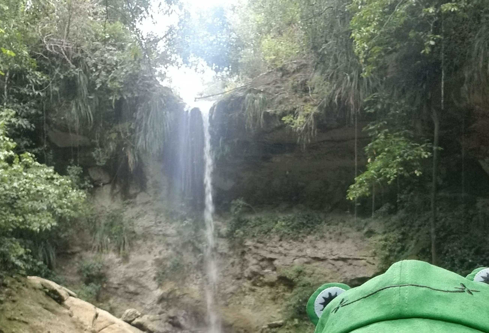
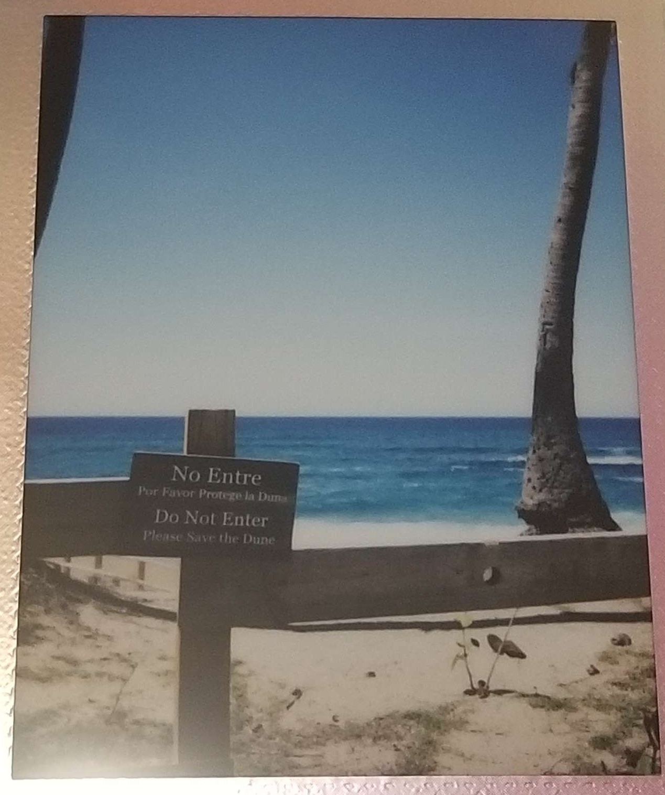
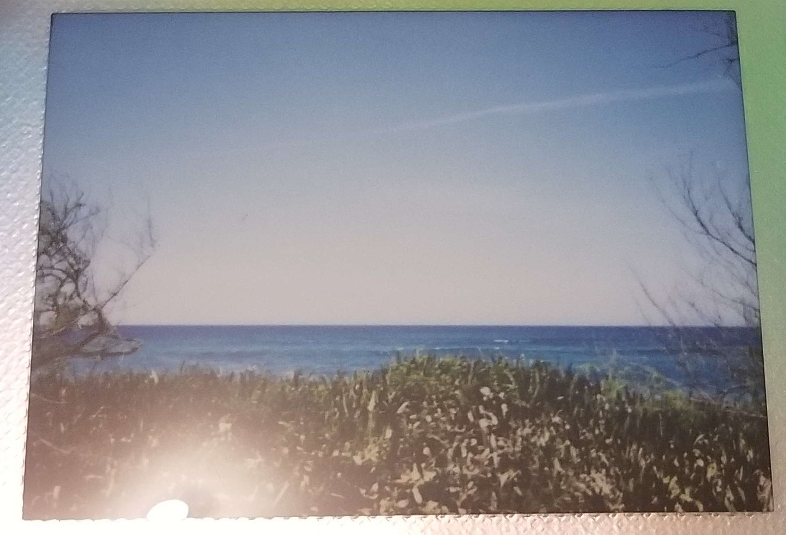
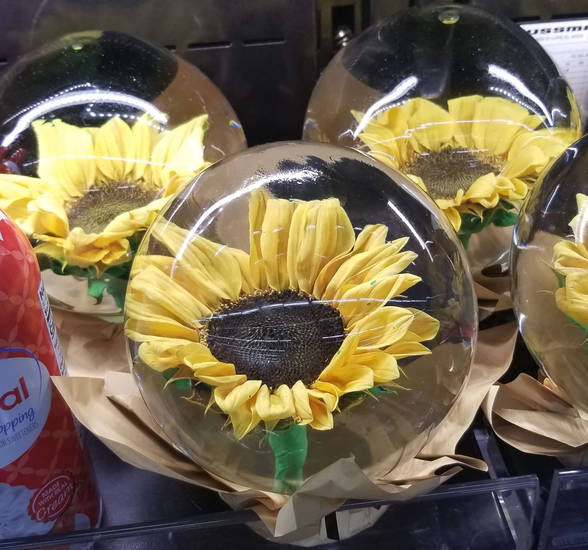
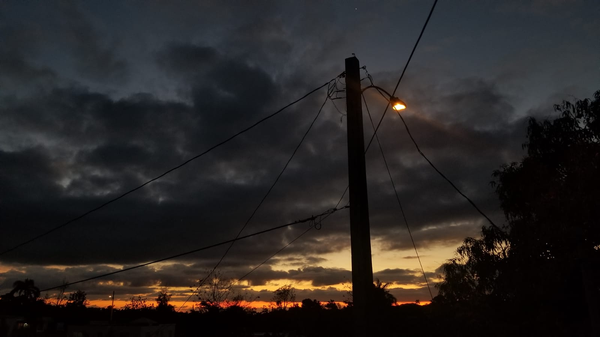
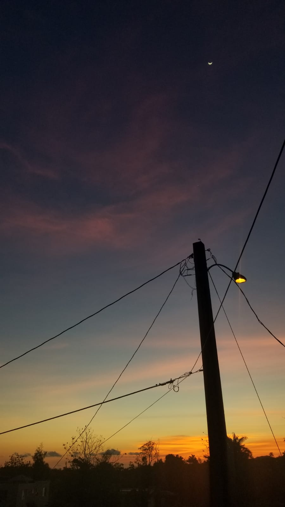
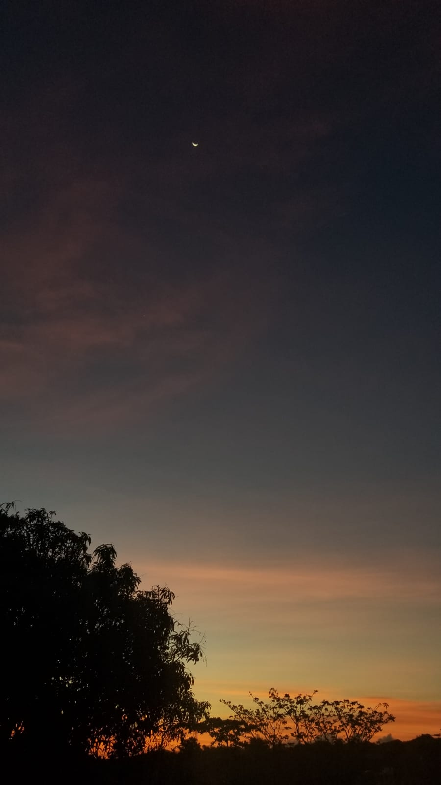
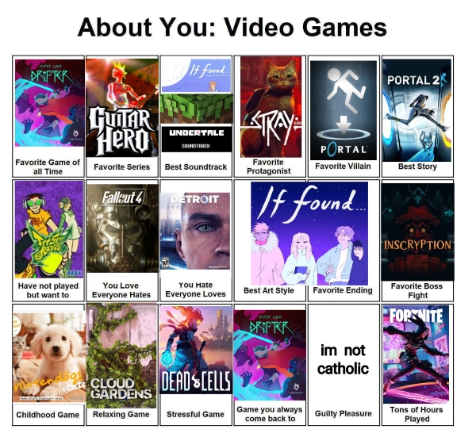

29.apr.23
phewwww and just like that april is done
really been enjoying my video games page!!! once you get the hang of this html shit, its pretty fun tbh i wont lie! it will take me a while but im excited to see how it looks when its done. i have so many video games to put there 
i started watching jojo's bizzare adventure a few days ago with my bf! i'm still in part 1 and so far it has made me laugh which is good bc i don't i would normally be into that kind of stuff but my bf said that it gets gayer and sillier so i will be watching. and i've also been watching better call soul. after finishing rewatching breaking bad like a year ago i thought it was time to watch better call saul and holyyyyyy moly. i did not expect to like this so much  on season 3 so far. i'd do anything for kim wexler
on season 3 so far. i'd do anything for kim wexler
and well :) i think that's it for today. I WILL NOT STAY UP TIL 5AM TONIGHT. will do a little bit of web surfing and take it chill for the rest of the night. i thinkkkkk. someones having a come back (kpop related) tomorrow but i dont remember who. oooooooh its lesserafim. okayyyyyyyy i do wanna tune it so expect that in the listening log soon ok see yall!
oh also i made a codepen profile for testing codes and stuff before putting them live here so there's a link if anyone wants to check it out!
29.apr.23
got up to pick up my meds and that's good enough for me 
still need to listen to the new beach house ep... become. maybe i'll do that now!
27.apr.23
hallooo! been having a nice couple of days  but i've been also so so so tired. i need to sleep early tonight so after im done I WILL be heading out to bed
but i've been also so so so tired. i need to sleep early tonight so after im done I WILL be heading out to bed 
alright well. i went to a waterfall yesterday! had to climb for a little while to get there, and lets just say that i need to start exercising more bc WOW... i almost fainted or something  when i finally got to the waterfall i started feeling so fucking dizzy that my vision started turning black and i almost couldnt hear anything. had to sit down for a good couple of minutes. but wow. i really need to go on like daily walks or something. it was really bad. but! when that kinda went away (i was still a bit shaky) i got in the water and it was so good. i should go there more often.
when i finally got to the waterfall i started feeling so fucking dizzy that my vision started turning black and i almost couldnt hear anything. had to sit down for a good couple of minutes. but wow. i really need to go on like daily walks or something. it was really bad. but! when that kinda went away (i was still a bit shaky) i got in the water and it was so good. i should go there more often.
|  | i wish i taken more pics! but i took one with my instax camera. it turned a bit dark tho. so here's this one from a selfie i took. you can still see my froggy hat :3 |
and today i went to the beach! very nice day
|  |
took pics with my instax again. wish i had my scanner with me though so for now these will do  |
|
and i also wanna share this fucking ? orb? sunflower orb? i found at walmart. i think it's so pretty |
 |
other then that  need to get back in the groove of giving out resumes... its so draining having to do it all again. but.
need to get back in the groove of giving out resumes... its so draining having to do it all again. but.  life goes on
life goes on
okay hopefully now i will be going to sleep. OH FUCK NEW BEACH HOUSE EP
25.apr.23
well. i did have to spend $200 on a new car battery............  andddd the siinamota song bot stopped working today as well after i thought it was back man imma tire
andddd the siinamota song bot stopped working today as well after i thought it was back man imma tire  but despite everything, i did get to see a nice sunset today as well.
but despite everything, i did get to see a nice sunset today as well.

AND ALSO TODAY i found out about this cat game that will come out on the switch in 2024 called little kitty, big city and i literally JUMPED it looks SO CUTEEEE i need it  and it also reminded me that i wanna make a page or something for upcoming video games that im looking forward to! so many things i wanna do. also heres the link for the game trailer if anyone wants to check it out!!
and it also reminded me that i wanna make a page or something for upcoming video games that im looking forward to! so many things i wanna do. also heres the link for the game trailer if anyone wants to check it out!!
24.apr.23
good lord. i just spent the past like. 3 hours working on ANOTHER way to make the siinamota song bot on twitter work again. and wow. i have so much respect for coders. i was just following instructions and i Do Not wanna know about coding for like a good week. this stuff is such a pain. BUT I THINK i managed to make it work. think. so thank you so much to GuglioIs2Stupid for releasing the code! i still have to check in the morning to see if its all working like it should. but WOWWW i am so happy to have that bot working again. it means a lot to me and its so sweet to have other ppl they love it a lot as well 
saw such beautiful sunsets today tho
|  |  |
AND TOMORROW..... i will try to jump my car... i hope the battery isnt bad cus like. id hate to waste 200 dollars for a new one. in my current state
23.apr.23
WOWIE!!! yesterday i was fighting for my LIFE trying to understand modals and javascript (i still dont understand it.....) BUT! i just kept googling codes and mixing them up till i got SOMETHING and BOOM!!!!! I DID IT!!!! i wanted the album page to have a pop up so i could write my thoughts, fav songs, and what not in there, and i made it work!! of course this was just me mixing up codes from tutorials i found (which are linked in the credits page!) but WOW. it felt like hours trying to figure out how i could make that work. most of the problem was that i didnt know how to make the album cover img work as a button so on click the info would pop up. but then i saw a tutorial where they had a button on top of a img so i figured!!!! if i could have the button be transparent and expand to the entire image then this could work  and it did! so yay for me :3
and it did! so yay for me :3
other than that. i need to jumpstart my car i dont go out a lot and i make sure to at least turn on my car every every week so it turn ON but this time.... this time it nah im out. i put the keys on the ignition and NOTHING wanted to turn on, ughhhh. having a car is so. i would say annoying. they should make a car that doesnt have to be turn on every week. that would be so helpful to me.... this is the 3rd time that it happens. and it would also be Really cool if someone employed me!! so i could do something! with my life. ah...... oh well.
22.apr.23
i will sometimes be skipping days btw! but anyway. yesterday i watched evil dead rise with my girlfriend! it was pretty good and scary tbh. i need to watch the previous movies. specially the first one. really liked how campy it was at times. i liked it! but my god. i forgot how annoying the theater can be when theres teenage boys watching a HORROR MOVIE. actually ive been out of high school for years and i dont go out a lot so i Really forgot how annoying they can be  they were just making stupid comments at full volume and nobody was giving a fuck
they were just making stupid comments at full volume and nobody was giving a fuck  it was very embarrassing for them. but yeah. solid 8/10 movie btw i recommend. also played a bit of super mario galaxy on my bf's switch. that game is so fun i've never played it before. and i started watching better call saul with him as well! i had finished watching breaking bad like..... 10 months ago so yeah i think its time to watch better call saul
it was very embarrassing for them. but yeah. solid 8/10 movie btw i recommend. also played a bit of super mario galaxy on my bf's switch. that game is so fun i've never played it before. and i started watching better call saul with him as well! i had finished watching breaking bad like..... 10 months ago so yeah i think its time to watch better call saul
and today i've just been working on my art section which i finished btw!!! gotta see what's next for me and this website. and yeah. havent done much. as always. sigh. been feeling a bit weird as well. just. idk
alright. i know its gonna take me a while to do the video games section sooo i made a box listing my fav things (vgs, animanga, shows, and more) on my about page! and with that im done for the night
20.apr.23
WOW............. WOW wow wow wow wow......... ok so do yall remember when i said that i had interview today? well  let me tell you a fun story. the email SAYS the interview is at 12pm. but they called me at 10am. obviously i missed the call because i thought the interview was at 12pm like IT WAS SCHEDULED?!?!? so i called back, and you know what the employee says? "yeah i dont think the manager will be making any calls at 12pm" and hangs up......................
let me tell you a fun story. the email SAYS the interview is at 12pm. but they called me at 10am. obviously i missed the call because i thought the interview was at 12pm like IT WAS SCHEDULED?!?!? so i called back, and you know what the employee says? "yeah i dont think the manager will be making any calls at 12pm" and hangs up......................  at the moment i was so frustrated and sad that i just started sobbing. this is so fucking unfair WHAT?????????? its 1pm rn. i dont think they'll be calling any time soon...
at the moment i was so frustrated and sad that i just started sobbing. this is so fucking unfair WHAT?????????? its 1pm rn. i dont think they'll be calling any time soon...  man. im just. this past week has not been fucking easy. i am so tired. of everything really. and im sick of it.
man. im just. this past week has not been fucking easy. i am so tired. of everything really. and im sick of it.
well anyway,,, i will be more active today. will be working on my listening log entry for seven sins. so i guess thats something i can look forward to today
i made a little tune
19.apr.23
content warning: death, suicide, depression
today i woke up with the news that astro's moon bin had passed away by taking his own life. i really cannot describe how i felt when i saw this. i really hope moonbin is finally getting the rest and happiness that he deserves. he was loved by so many people. my condolences goes out to his fans, friends, and family. especially his sister, moon sua. i did not know much about moon bin, but from his apperances with his sister and on music shows, he seemed like a very nice person. always with a big smile on his face. it is heartbreaking to think about what moon sua is going through right now as well and i truly wish her the best and hope she takes all the time it takes to recover. again, rest well moon bin. know that people will forever have you in their hearts.
kpop as an industry has a lot of problems, especially with the mental health of their idols. but this is a topic i will touch another day out of respect for moon bin and his passing.
as someone who has been (and still is) in a bad place mentally, i genuinely cannot imagine how lonely moon bin must have felt like, for him to do what happened. and my heart is very heavy for him. i know what its like to feel so alone, so hopeless, that you start to think that maybe death is the answer to all of your problems. to everyone and to myself: please take lots of care. you arent alone and there's people who care about you. please reach out to someone if you find yourself in this place mentally. this has helped me before, and in case anyone else needs it heres an article about what to do if you're feeling suicidal. love you all
i'll be taking it easy today and won't be adding anymore logs to today's entry.
18.apr.23
|
i figured out how to put a paragraph next to an image!!!! like like this!!! YAYY. honestly this whole coding thing is so fun. a bit frustrating at times. but fun |

|
the file for the sidebar's javascript (so its the same on all pages) looks so fucking scary KDFSDKFJDLFK. but its mostly bc the html code in it breaks if i like. put it in different lines cus the file thinks its javascript....  if anyone knows how to make the html part of this look decent let me know. cus editing it to add anything to that html part is such a headache
if anyone knows how to make the html part of this look decent let me know. cus editing it to add anything to that html part is such a headache
i was thinking earlier too about how it could a... maybe fun? learning experience to try and convert my carrd to html. or at least try to. cus i know its not going to be easy (for me) but i still love that design i did based off yukika's soul lady album so much  so if you see me messing around a testing page that kinda looks like a carrd layout, thats that! i really have no clue how im going to do the seperate sections that only come up when you click the buttons tho. like my main problem is that i dont know how i would hide them in the page. but oh well. i guess i just gotta look deeper into google. but i also dont really know how to word this very well to be able to search my problem properly... F
so if you see me messing around a testing page that kinda looks like a carrd layout, thats that! i really have no clue how im going to do the seperate sections that only come up when you click the buttons tho. like my main problem is that i dont know how i would hide them in the page. but oh well. i guess i just gotta look deeper into google. but i also dont really know how to word this very well to be able to search my problem properly... F
also i think at this point its pretty obvious to say that my life is not really that interesting and honestly stuff can get pretty... depressive real quick if i do decide to overshare. but i dont necessarily want to hide that either. i have depression and anxiety, and you know i recently noticed the huge contrast of my website vs well. myself. you look at my site and its so bright. happy. excited. and i am kinda like that irl!!! but ive def been having some struggles with my mental health to the point where i just feel. mostly sad all the time. im not really going to get into it. so sorry for those reading this and wanting more context. but i recently noticed that contrast was like a neat observation since that wasnt really my intention.
um anyway. very excited for drippin's new single!!!  that last teaser they dropped sounds so fucking good i love strings so much i really cant wait to hear it. i hope woollim keeps the newtype production team employed for a long time bc i just love the stuff they have done for drippin's discography. i have to wait til 5am for that tho ughhh. but its ok. maybe i'll catch up with fortnite in the meantime.
that last teaser they dropped sounds so fucking good i love strings so much i really cant wait to hear it. i hope woollim keeps the newtype production team employed for a long time bc i just love the stuff they have done for drippin's discography. i have to wait til 5am for that tho ughhh. but its ok. maybe i'll catch up with fortnite in the meantime.
ok so i lied. my ass did not play fortnite and instead i was working on my art page. but anyway HOLYYYYYYY shit. that drippin comeback was so good to me. well 2 songs out 3 were really good. to me. i'll def have the listening log entry of that up sometime up today. and i was also thinking of making a post just discussing the overall comeback as a whole. talk about the mv, styling, choreos, etc. hmm. i'll think about it
17.apr.23
WOWWW i literally said yesterday how i was a bit bumped out that i hadnt been contacted after my last interview... well guess what? i got called for another interview. a part of me wants to be excited, but this whole process of trying to get a job has been so tiring as well. the interview is on thursday so wish me good luck yall
i think its incredible the amount of times ive cleaned my browsers cached images and files in the last 4 days of me making this site yeah im one of those ppl that barely touches that "clean cache" button im sorry
boyfriend sent me a video game meme template today so i filled it out, wanna share it here as well! heres the link for the template if you wanna do it yourself
click me to see the pic

finished today's listening log entry! yay yay yay!  i love making those logs. prob one of my fav pages on this page
i love making those logs. prob one of my fav pages on this page  i really love talking about music. even though i feel like i dont really have the... lets say like terminology? exact vocabulary? yeah that. but i still like expressing my thoughts on the stuff i listen. makes me smile
i really love talking about music. even though i feel like i dont really have the... lets say like terminology? exact vocabulary? yeah that. but i still like expressing my thoughts on the stuff i listen. makes me smile  and thats it for today. take it easy yall
and thats it for today. take it easy yall
16.apr.23
been raining all day today. so cozy. also ive been working on my website button! it looks so cute :3 i really like how its coming out so far.
i've been binge watching the owl house all week too. i love luz so much. just so nice to have her and i adore when she talks in spanish sometimes. luz noceda i love you. i need to put her in my fav characters when i get around to doing that
got a stamp template from deviantart and made SIINAMOTA stamps!!!!!!! for my sidebar he he. i love siinamota  the stamps in question:
the stamps in question:


i wrote in my status yesterday that i was going to do like 100 today related to the site and honestly? i learned from that. i wont say that again
overall today was pretty chill. but i kinda feel like i should be doing something else. probably trying to print out more resumes since the company that interviewed me like a month ago hasnt contacted me again..... sigh  and it feels bad but i know i shouldnt be feeling so down by it. i really need to get into the grove again of applying for jobs
and it feels bad but i know i shouldnt be feeling so down by it. i really need to get into the grove again of applying for jobs
holy shit. you know its been insane learning abt html and all that jazz these few days. and i should log it too. i just learned about margins. this changes everything. hmm. with this knowledge im prob gonna change a few things around tomorrow. honestly like despite having that tumblr theme expirience i am pretty new to all of this, and while at times it can be quite... frustrating cus i dont know anything, its pretty cool when i manage to understand and achieve the simple thing that i was trying to do. like how to add a fucking margin i wonder what i'll learn tomorrow
15.apr.23
woke up earlier than usual today. i need to fix my sleeping schedule soo badly... but anyway. average day. facetime'd my mom tho and i got to see mizu! (my cat) i miss him so much i hope i get to see him next year.
i looked in the mirror recently and i am so fucking pale  bc i barely go out
bc i barely go out  okay i will make sure to go outside tomorrow good lord. feeling truly cringe fail dsfjld
okay i will make sure to go outside tomorrow good lord. feeling truly cringe fail dsfjld
been also working on my about page. should be up pretty soon! there's a pic of me and mizu there too
14.apr.23
want to let it be know that i was indeed able to play fortnite. even got a victory royale with a friend! update is pretty nice. fun. i should make a page here for fortnite. and like my fav skins and characters....... im like really into fortnite its a tiny bit embarassing but its ok ive learned to embrase it.
also i need to make a 88x31 button or banner (idk whats the actual name help) for my website but i literally got no clue how or what to make the banner about. im thinking of just putting the cat minecraft plushie there. im cool with that being front and center of my "brand". cat minecraft plush. i need to get one actually they are so cute. yet another thing to add to my stuff to buy when employed. yay.
13.apr.23
alright fixed some stuff here and there on the website... fortnite time :) see yall tomorrow! gonna see if i can apply for more jobs tomorrow.... ugh... and i also wanna catch up with new music releases
also ive been so focused on making this website that i havent played fortnite in like 2 days.... a new update just came out I WANNA PLAY but my brain isnt exactly letting me. ugh
very excited to run this website! i miss this so much from when i used to customize my tumblr theme. im still not very experience with html but im def way more comfy with it now!